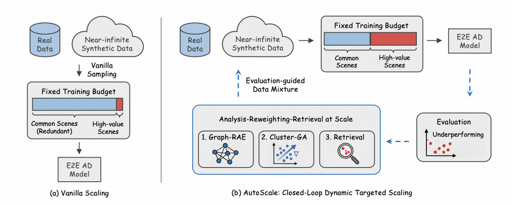
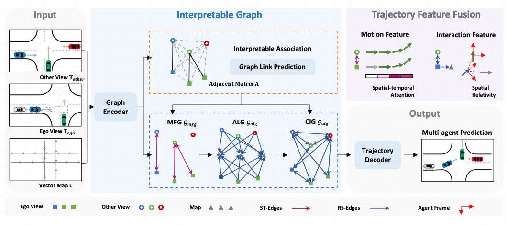
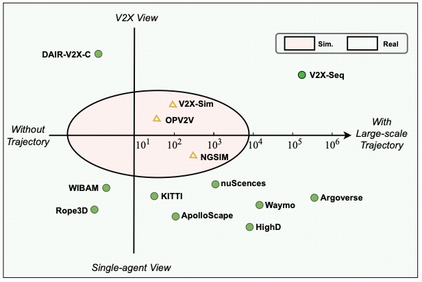

|
Hongzhi Ruan
I am currently a Ph.D. student under the supervision of (Prof. Dan Xu), at Hong Kong University of Science and Technology (HKUST). I received my Bachelor's Degree and Master's Degree from Beijing Institute of Technology (BIT) and University of Chinese Academy of Sciences (UCAS).
My primary research focuses on foundation models and learning systems for embodied intelligence, using techniques such as 3D vision, generative models, and reinforcement learning. Feel free to contact me if you are interested in collaborating on these topics.
Email /
Google Scholar /
Github
|
|
|

|
Closed Loop Dynamic Driving Data Mixture for Real-Synthetic Co-Training
Hongzhi Ruan, Pei Liu, Weiliang Ma, Zhengning Li, Xueyang Zhang, Kun Zhan, Jun Ma, Dan Xu
NeurIPS 2026 Spotlight (Top 3.3% among accepted papers)
arXiv
|
|

|
Learning Cooperative Trajectory Representations for Motion Forecasting
Hongzhi Ruan, Haibao Yu, Wenxian Yang, Siqi Fan, Zaiqing Nie
NeurIPS 2024
arXiv
/
code
|
|

|
V2X-Seq: A Large-Scale Sequential Dataset for Vehicle-Infrastructure Cooperative Perception and Forecasting
Haibao Yu, Wenxian Yang, Hongzhi Ruan, Zhenwei Yang, Yingjuan Tang, Xu Gao, Xin Hao, Yifeng Shi, Yifeng Pan, Ning Sun, Juan Song, Jirui Yuan, Ping Luo, Zaiqing Nie
CVPR 2023
arXiv
/
code
|
Experiences
|
- Aug. 2024 - Aug. 2026: Foundation Model, Li Auto. VLA models, data infra and evaluation.
- Aug. 2022 - Apr. 2024: Joint research program, Tsinghua AIR and Baidu Apollo. Perception and forecasting, cooperative autonomous driving.
- Jun. 2021 - Jun. 2022: Autonomous Delivery Department, Meituan. Decision and planning for autonomous driving.
|
Services
|
- Reviewer for Conferences: NeurIPS, ICML, ICLR
|
|